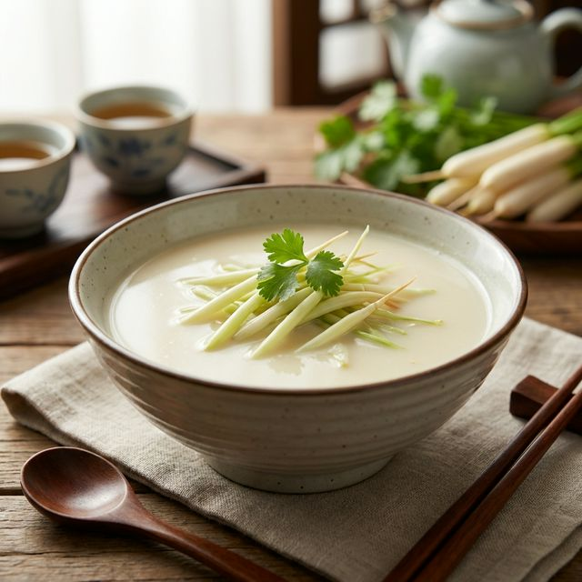

食材准备
- 主料： 大明湖蒲菜 250g
- 配料： 火腿片、冬笋片 适量
- 底汤： 浓白汤 (骨头汤/鸡汤) 500ml
- 调料： 姜米、葱段 适量
- 调料： 盐、白胡椒粉 适量
- 油类： 猪油 (更香) 适量
烹饪步骤
处理蒲菜
选取蒲菜的鲜嫩茎部，切成5厘米长的段。用沸水焯烫一下，去除苦涩味，保持翠绿。
煸炒底料
锅中放入猪油，熔化后下入葱段、姜米爆香。猪油能增加汤汁的醇厚感和奶白色。
煨煮
倒入浓白汤，大火烧开。下入蒲菜段、火腿片和冬笋片。这些配料能大大提升汤头的鲜美度。
调味
中小火煨煮3-5分钟，至蒲菜变软透明。加入盐、少许白胡椒粉调味。注意白胡椒能提鲜但不应过量。
出锅
待汤汁变得浓绸乳白，淋入少许葱油，装盆即可。汤味醇厚，蒲菜脆嫩，清香四溢。